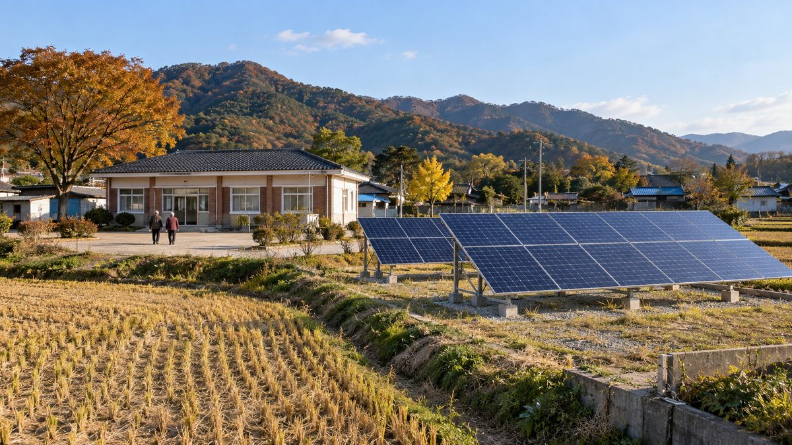

국민연금공단 '마을자치연금' 9개 마을·211명으로…본사 옥상엔 시민·임직원 협동조합 400kW 'NPS 햇빛발전소' 추진

마을 유휴지 약 70kW 태양광 수익 등으로 만 70세 이상 어르신에게 매월 6만~10만 원, 공단이 공공기관 포럼에서 사례 발표…본사 발전소는 수익 전액 에너지 취약계층 지원, 전력 계통 제약은 과제
국민연금공단이 마을 태양광 수익으로 농어촌 어르신에게 다달이 연금을 주는 '마을자치연금'을 9개 마을로 넓혔고, 본사 사옥 옥상에는 시민·임직원·민간기업이 협동조합으로 참여하는 400kW 규모 'NPS 햇빛발전소'를 추진하고 있다고 30일 서울에서 열린 공공기관 포럼의 사례 발표에서 밝혔다. 공단 설명에 따르면 마을자치연금은 공단과 지자체가 마을 유휴지에 약 2억 원을 들여 약 70kW 규모 태양광을 놓아 주고, 전력 판매 수익과 마을 법인의 공동생산 수익을 합쳐 만 70세 이상 어르신에게 마을에 따라 매월 6만~10만 원을 주는 방식이다. 익산 성당포구마을에서 시작해 농촌 6곳, 어촌 3곳으로 늘었고 2026년 기준 수혜 어르신은 211명이며, 서산 중리마을의 감태 가공이나 고창 장호마을·화성 궁평리의 숙박·체험처럼 마을마다 다른 수익원을 붙였다. 발표를 맡은 김응수 공단 ESG경영부 부장은 농촌의 연금 가입률이 34.0%로 도시 근로자 69.6%의 절반에 못 미친다며, 소규모 마을 태양광은 수익성이 낮아 민간이 들어오기 어려운 만큼 공공이 초기 설비 투자 부담을 덜어 주고 공단의 연금 관리 경험을 보탰다고 설명했다. 2023년 9월 익산시가 지원 조례를 처음 만들었고 2024년 9월 전북특별자치도가 5년 단위 종합계획을 담은 광역 조례를 제정했으며, 공단은 성당포구마을에 최근 3년간 13명이 새로 들어왔다고 소개했다. 본사 3개 동 옥상에 추진 중인 NPS 햇빛발전소는 공단이 직접 전력을 사는 직접 PPA 방식으로 연간 525MWh를 생산해 수익 전액을 지역 에너지 취약계층의 설비 지원과 바우처에 쓸 계획이지만, 협동조합 출자 방식과 착공 시기는 이번 발표에 나오지 않았고 공단은 전력 계통 제약을 풀기 위해 전북특별자치도와 에너지저장장치(ESS) 조기 설치를 협의하겠다고 했다.
시민에너지 관점
약 2억 원짜리 마을 발전소 하나가 어르신 연금의 밑돈이 되고, 400kW 공공기관 옥상이 시민 협동조합의 발전소가 된다는 구상은 공공의 땅과 지붕을 누가 가져야 하는지에 대한 좋은 답이다. 공공기관이 직접 지어 수익을 기부하면 되지 굳이 시민 출자가 필요하냐는 물음이 나올 수 있지만, 시민이 조합원으로 지분과 의결권을 가져야 수익 전액을 취약계층에 쓰겠다는 약속이 기관장이 바뀌어도 지켜지고 쓰임새도 시민 눈앞에서 정해진다. 수익 전액을 나눔에 쓰는 구조라면 출자한 시민이 무엇을 돌려받는지도 미리 밝혀야 참여가 넓어진다. 공단은 협동조합의 출자 조건과 의결 구조를 공개하고, 다른 공공기관도 비어 있는 옥상을 같은 방식으로 지역 시민에게 열어야 한다.
출처: 아시아투데이 2026-10-30 이정연 원문 보기
国民年金公団の「村自治年金」、9集落・211人に拡大…本社屋上では市民・職員の協同組合による400kW「NPS太陽光発電所」を推進
集落の遊休地に置いた約70kWの太陽光の収益などで、満70歳以上の高齢者に月6万～10万ウォン、公団が公共機関フォーラムで事例発表…本社発電所は収益全額をエネルギー弱者支援に、送電網の制約が課題
韓国の国民年金公団は30日、ソウルで開かれた公共機関フォーラムの事例発表で、集落の太陽光収益で農漁村の高齢者に毎月年金を支給する「村自治年金」を9集落に広げ、本社屋上では市民・職員・民間企業が協同組合として参加する400kW規模の「NPS太陽光発電所」を推進していると明らかにした。公団の説明によると、村自治年金は公団と自治体が約2億ウォンを投じて集落の遊休地に約70kWの太陽光設備を設け、売電収益と集落法人の共同生産収益を合わせて、満70歳以上の高齢者に集落ごとに月6万～10万ウォンを支給する仕組みだ。全羅北道益山市の聖堂浦口マウルから始まり、農村6カ所、漁村3カ所に広がって、2026年時点の受給者は211人となり、瑞山の中里マウルの海藻加工、高敞の長湖マウルや華城の宮坪里の宿泊・体験のように、集落ごとに異なる収益源も組み合わせている。発表を担当した公団ESG経営部のキム・ウンス部長は、農村の年金加入率は34.0%で都市の勤労者の69.6%の半分にも満たないとし、小規模な集落の太陽光は収益性が低く民間が参入しにくいため、公共が初期の設備投資負担を軽くし、公団の年金管理の経験を加えたと説明した。2023年9月に益山市が初めて支援条例を制定し、2024年9月には全北特別自治道が5年単位の総合計画を盛り込んだ広域条例を設けており、公団は聖堂浦口マウルに直近3年で13人が新たに移り住んだと紹介した。本社3棟の屋上で推進中のNPS太陽光発電所は、公団が電力を直接購入する直接PPA方式で年525MWhを生産し、収益の全額を地域のエネルギー弱者の設備支援やバウチャーに充てる計画だが、協同組合への出資方法や着工時期は今回の発表で示されず、公団は送電網の制約を解くため全北特別自治道とエネルギー貯蔵装置（ESS）の早期設置を協議するとした。
市民エネルギーの視点
約2億ウォンの集落発電所一つが高齢者年金の元手となり、400kWの公共機関の屋上が市民協同組合の発電所になるという構想は、公共の土地と屋根を誰が持つべきかという問いへの良い答えだ。公共機関が自ら建てて収益を寄付すればよく、あえて市民出資は要らないとの疑問もあり得るが、市民が組合員として持ち分と議決権を持ってこそ、収益全額をエネルギー弱者に使うという約束が機関トップが代わっても守られ、使い道も市民の目の前で決まる。収益全額を分かち合いに回す仕組みであれば、出資した市民が何を受け取るのかも前もって示してこそ参加が広がる。公団は協同組合の出資条件と議決の仕組みを公開し、他の公共機関も空いている屋上を同じ方法で地域の市民に開くべきだ。
出典: アジアトゥデイ 2026-10-30 イ・ジョンヨン 原文を読む
韩国国民年金公团"村自治年金"扩至9个村、211人…总部屋顶推进由市民和职员合作社参与的400kW"NPS阳光电站"
以村闲置土地上约70kW太阳能的收益等，每月向70岁以上老人发放6万至10万韩元，公团在公共机构论坛上发表案例…总部电站收益将全部用于支援能源弱势群体，电网制约仍是难题
韩国国民年金公团30日在首尔举行的一场公共机构论坛上发表案例称，用村庄太阳能收益每月向农渔村老人发放年金的"村自治年金"已扩大到9个村，并正在总部屋顶推进由市民、职员和民营企业以合作社形式参与的400kW规模"NPS阳光电站"。据公团介绍，村自治年金由公团和地方政府投入约2亿韩元，在村里的闲置土地上安装约70kW太阳能设备，再把售电收入与村法人的共同生产收入合在一起，按村不同每月向年满70岁的老人发放6万至10万韩元。该模式从全罗北道益山市圣堂浦口村起步，扩展到6个农村和3个渔村，截至2026年受益老人为211人；瑞山中里村的海藻加工、高敞长湖村和华城宫坪里的住宿与体验项目等，各村还搭配了不同的收入来源。负责发表的公团ESG经营部部长Kim Eung-su表示，农村国民年金参保率仅为34.0%，不到城市职工69.6%的一半；小规模村庄太阳能收益低、民间难以进入，因此由公共部门减轻初期设备投资负担，并加入公团的年金管理经验。益山市于2023年9月率先制定支援条例，全北特别自治道于2024年9月制定了包含五年综合规划的广域条例；公团还介绍说，圣堂浦口村近三年新迁入13人。正在总部三栋楼屋顶推进的NPS阳光电站将采用由公团直接购电的直接PPA方式，年发电525MWh，收益将全部用于地方能源弱势群体的设备支援和代金券，但合作社的出资方式和开工时间此次均未公布；公团表示将与全北特别自治道协商尽早安装储能系统（ESS），以化解电网制约。
市民能源视角
一座约2亿韩元的村级电站成为老人年金的本钱，一块400kW的公共机构屋顶成为市民合作社的电站——这一设想很好地回答了公共土地和屋顶应归谁所有的问题。有人会问，公共机构自己建站、把收益捐出去就行，何必要市民出资；但只有市民作为社员持有股份和表决权，"收益全部用于弱势群体"的承诺才能在机构负责人更替后依然兑现，用途也能在市民眼前决定。如果收益全部用于分享，就要事先说明出资市民能得到什么回报，参与面才会扩大。公团应公开合作社的出资条件和表决结构，其他公共机构也应以同样方式把闲置屋顶向当地市民开放。
来源: 亚洲今日 2026-10-30 Lee Jeong-yeon 查看原文
National Pension Service's "village pension" reaches 9 villages and 211 seniors; 400kW rooftop plant with citizen-staff cooperative planned at its headquarters
Income from about 70kW of solar on idle village land and other sources pays residents aged 70 and over 60,000 to 100,000 won a month, the NPS said at a public-sector forum; all income from the headquarters plant is to go to energy-poor households, but grid limits remain an obstacle
Korea's National Pension Service (NPS) said on Oct. 30, presenting a case study at a public-sector forum in Seoul, that it has expanded its "village self-governing pension," which uses village solar income to pay monthly pensions to older people in farming and fishing communities, to nine villages, and that it is pursuing a 400kW "NPS solar plant" on the roofs of its headquarters in which citizens, staff and private companies will take part as a cooperative. According to the NPS, the pension works by having the agency and local governments spend about 200 million won to install roughly 70kW of solar on idle village land, then combining electricity sales with the village corporation's other joint income to pay residents aged 70 and over between 60,000 and 100,000 won a month, depending on the village. The scheme began in Seongdang Pogu village in Iksan, North Jeolla, and has grown to six farming and three fishing villages, with 211 beneficiaries as of 2026, while villages have added their own income sources, such as seaweed processing in Jungni village, Seosan, and lodging and tourism programs in Jangho village, Gochang, and Gungpyeong-ri, Hwaseong. Kim Eung-su, head of the NPS's ESG management department, who gave the presentation, said the pension enrollment rate in rural areas is just 34.0%, less than half the 69.6% for urban workers, and that because small village solar projects earn too little to attract private investors, the public sector has taken on the upfront equipment costs and added the agency's pension management know-how. Iksan passed the first support ordinance in September 2023 and North Jeolla Special Self-Governing Province followed with a province-wide ordinance requiring five-year plans in September 2024, and the NPS said 13 new residents have moved to Seongdang Pogu over the past three years. The headquarters plant, planned for the roofs of three buildings, would produce 525MWh a year under a direct power purchase agreement with the NPS as buyer and put all of its income toward equipment support and vouchers for energy-poor local households, but the presentation did not say how cooperative members would invest or when construction would start, and the NPS said it would work with the provincial government on early installation of energy storage (ESS) to get around grid constraints.
Citizen Energy View
A village plant costing about 200 million won that seeds an old-age pension, and 400kW of public-agency roof turned into a citizen cooperative's power plant, are a good answer to the question of who should own public land and roofs. Some will ask why citizens need to invest at all when an agency could build the plant itself and donate the income, but only when citizens hold shares and votes as members will a promise to give all income to vulnerable households survive a change of leadership, and only then will its use be decided in front of the public. If every won of income goes to sharing, the agency also needs to say up front what investing citizens get back, or participation will stay narrow. The NPS should publish the cooperative's investment terms and voting structure, and other public bodies should open their empty roofs to local citizens in the same way.
Source: Asia Today 2026-10-30 Lee Jeong-yeon Read the original